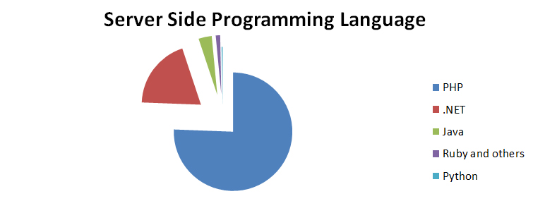
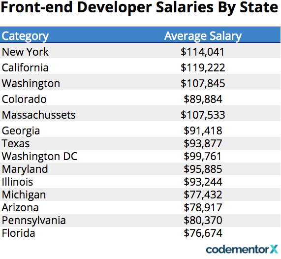

Web programming, also known as web development, is the creation of dynamic web applications. Examples of web applications are social networking sites like Facebook or e-commerce sites like Amazon.A lot of people learn web coding because they want to create the next Facebook or find a job in the industry. But it’s also a good choice if you just want a general introduction to coding, since it’s super easy to get started.
LDefinitely Web development is the great career choice if you have passion towards web programming as well as new technologies. But you will not become expert in couple of days or months. At the beginning of the career in web development requires more patience and straight forward towards quick learner skills apart form other fields.There are so many opportunities in web development around the globe.
